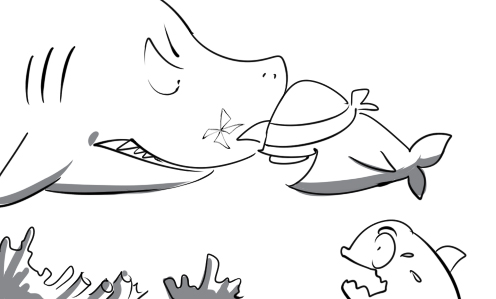

adorn: Peter adorns his living room with a beautiful painting.
avalanche: The skier is trying his best to escape the deadly avalanche.

aviation: My friend has just graduated from an aviation college and becomes a pilot at Vietnam Airlines.
awkward: I used to experience an awkward situation when I left my wallet at home and couldn't pay for my meal.
canvas: The painter is painting a landscape in oils on canvas.
capability: The new employee succeeded in building credibility at work thanks to his capability.
catastrophic: The radiation contamination had catastrophic effects on the ecosystem.
clutch: The little boy was very excited when he found a clutch in his garden.
dashboard: The dashboard of this car is very sophisticated. Not everyone can operate it.
dazzling: Watching the dazzling sunrise over the mountains is such a wonderful experience.
deadly: You have to be very careful when walking on these cliff edges.
deal: Finally, they could reach a deal on how to divide profits.
dearth: Two-thirds of the world's population will face a dearth of water in the near future.
debris: There was a lot of debris in his apartment after the severe earthquake.
discipline: The veteran uses military discipline to educate his son.
eject: Everybody was so scared when the volcano started ejecting hot lava.
elevate: Mr. Thomas was elevated to general manager after a long time of working for this company.
eloquent: He made a very eloquent speech to persuade them to invest in his company.
elusive: The police have been searching for the elusive criminal for a long time.
emancipate: Peter emancipated the bird from the cage and let it fly away.
facilitate: The new train station will facilitate the development of tourism.
fallout: The fallout following a nuclear blast has many negative effects on the environment and the populations.
farce: This award is such a farce because all the winners are the CEO's family members.
fatality: There was a fatality in the attack conducted by a crazy man.
fetus: The young mother looks really happy when she feels her child's fetus moving inside.
gadget: This wine opener is a useful gadget for loosing bottle lids.
galaxy: The Milky Way is the galaxy of the Earth and the solar system.
garner: The detective is trying to garner sufficient evidence of the explosion.
gaunt: Peter looks really gaunt after starving himself for a week.
gene: If the children have curly hair, one of their parents must have a gene for curly hair.
genre: Music can be divided into many different genres such as pop, rock…
habitat: Animals live more comfortably in their natural habitat.
haggle: Mary is haggling with the salesman to get the best deal.
hail: Robinson Crusoe saw a ship offshore and hailed it with joy.
hallucination: Johnny suffered from horrific hallucinations after he took drugs.
handicap: The gown of the actress is very beautiful but it handicaps her movements
icon: The wine glass icon indicates that the products are really fragile.
ideology: You cannot argue with someone whose ideology is totally different from yours.

ignoble: Everyone in the class frown upon his ignoble action.
illegible: His handwriting is so illegible that no one can read it.
ill-founded: No one believes his ill-founded story although he swears that it is true.
illustrious: My grandfather is telling us about his illustrious achievements in the war.
impairment: My uncle has a hearing impairment in his right ear.
impressive: Lisa is attracted by Marc's impressive elegance. He always gives her a flower bouquet on their dates.
involve: Peter was told that the job would involve working long hours.
junction: His house is located at the junction of Magnolia street and Bolsa street.
kettle: Andy takes a kettle full of water and pours it on my head.
keynote address: The union president makes a keynote address that outlines the main issues of the meeting.

kin: Peter doesn't recognize his kin because he hasn't seen him for a long time.
laden: David is pulling a wagon laden with rocks.
lament: We can hear a lot of pitiful laments at his funeral.
land: My friend had to defeat many competitors to land this job.
landslide: KBS reports that a landslide killed 9 people and injured 20 in Chuncheon yesterday.
larva: This ugly larva will turn into a beautiful butterfly in the near future.
latchkey child: This latchkey child can take good care of himself although he is just ten years old.

magnificent: The little boy was very excited when he saw a magnificent Christmas tree.
magnitude: The intern begins to feel discouraged at the magnitude of his task.
malice: Tom makes his friend fall with malice.
malnutrition: A number of Africans are suffering from malnutrition.
mandate: The captain gives a mandate to find out who revealed confidential information.
mangle: Peter accidentally mangled his alarm clock when he tried to turn it off.
manure: It is recommended to use manure to help plants grow strong and healthy.
naked: Mary was very shocked when she saw a naked man standing at her door.
natal: According to his identity card, his natal day is December 11th 1988.
nationwide: Vietnam Idol is a nationwide singing competition.
navigable: This river is not considered navigable under the state's law.
newfangled: Thomas touches the newfangled device that he's never seen before and suddenly it explodes.
obnoxious: I cannot stand the obnoxious smell of tobacco smoke.
optical: You should wear optical eyewear if you are short-sighted or long-sighted.
oratorical: Peter practices his oratorical skills everyday in order to become a lecturer in the future.
orbit: The moon orbits the earth in about 27 days.
pamphlet: I am consulting pamphlets to learn about the quality of new electronic products.
paradigm: This company is the paradigm of successful business.
parameter: The salesman is presenting technical parameters of this new laptop to his customers.
parasite: Fleas are parasites. They obtain nourishment from the dogs without killing them.
quartet: The quartet is performing a melodious concerto of Beethoven.
rally: The captain rallied his troop to prepare for the upcoming battle.
ramble: I like to ramble through the city when I feel sad.
range: Everybody is surprised at his wide range of mathematical knowledge.
rare: The giant panda is the rarest member of the bear family.

sabotage: His car was completely sabotaged in a powerful explosion.
sacred: A pagoda is a sacred place where people praise and worship Buddha.

safeguard: The president has many soldiers safeguard his house.
sail: The adventurer sailed through the sea full of sharks on a little yacht.
step-father: The little boy doesn’t look like him at all. He must be his step-father.
tableau: This movie was a tableau of Marilyn Monroe's life.
tackle: Peter is very independent. He never asks anyone to help him tackle his problems.
tactile: Fishes use their fins for movement and as tactile organs.

tamper: I really hate John because he always tampers with my affairs.
throughout: The boy played games throughout the day and didn’t do his homework.
tragedy: It is going to be a tragedy if his fierce wife finds him cheating with another woman.
ultrafast: This ultrafast sports car has a top speed of 500 km/h.
ultraviolet: People with high levels of exposure to ultraviolet light are at greater risk of skin cancer.
vain: He is very vain about his looks although he is not handsome.
valve: The water couldn't stop running because the valve was broken.
virus: Peter almost went crazy when the virus deleted all the files on his computer's hard drive.
wound: His arm was in a plaster cast because it was wounded in a fight.
wreath: Mr. Thomas puts a wreath on the winner's head and congratulates him.
wreckage: Firemen are searching the wreckage for signs of survivors.
wring: My mother wrings the water from the clothes after washing them